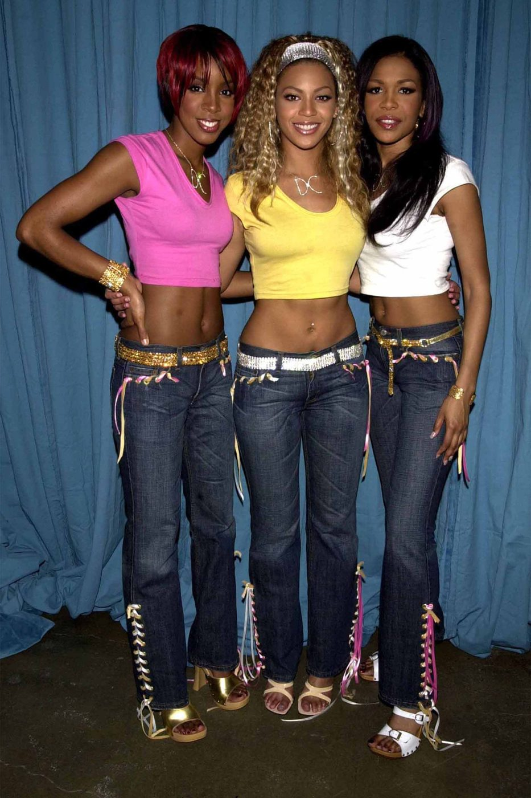

Low-Rise & Crop Top
A staple of women's fashion throughout the 2000s.
Details
This look was iconic for women throughout the 2000s and is still prevalent today. The clothing hugged the body, and it was usually topped off with accessories for extra flair.